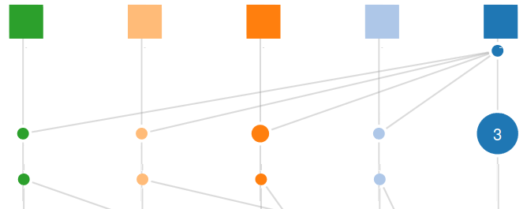
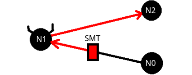

")
About
I am a second year MSc student at the University of British Columbia. I completed my undergraduate at UBC in May of 2016 majoring in computer science. Currently I am working with Ivan Beschastnikh on distributed systems analysis. In the fall of 2018 I'll begin a PhD with the UCSD Sysnet group.
Publications
| Paper Slides Repo Demo |
Inferring and Asserting Distributed System Invariants Stewart Grant, Hendrick Chech, Ivan Beschastnikh To appear in International Conference ICSE 2018 |
| Poster Abstract Repo |
Distributed Test Case Generation using Model Inference with Dara Stewart Grant, Ivan Beschastnikh Poster at NSDI 2018 |
| poster abstract |
Inferring likely data invariants of distributed systems Stewart Grant, Sam Creed, Ivan Beschastnikh Poster at SOSP 2015 |
Projects
Dara (distributed dynamic verification)Dara models distributed systems based soely on state traces. The model is verified using the SPIN model checker against user defined assertions. Dara's can infer new exections not present in input traces and check them for violations of safty and liveness conditions. |
|
TorMentor (anonymous distributed machine learning)TorMentor is a collaborative machine learning framework that operates through Tor. TorMentor clients participate in a federated learning algorithm. Clients are protected from the de-anonymization of their data via differential privacy. |
|

|
Dinv (automatic distributed invariant detector)Distributed systems are complex and require meticulous development to correctly handle asynchronous execution, and partial failures. DInv is a tool for automatically detecting likely data invariants in distributed systems. Data invariants are useful for verifying the correctness of a system |
|  |
Distributed Clocks (vector clock library and instrumentation tool)Vector clocks are useful for reasoning about concurrency and developing protocols. DistributedClocks is an optimized vector clock library for Go, Java, C and C++. It also provides an instrumentation tool for automatically added vector clocks to programs using Go's net library. |

|
Dovid (automatic distributed system documenter)Distributed systems can be difficult to understand from just reading source code. The most integral part of a distributed system is its network communication. Dovid automatically detects network communication and generates documentation for variables which either affect or are affected by network communication. |
Dviz (distributed state visualization [in production])Changes and progressions of distributed state are hard to reason about through the inspection of logs. Visualizing distributed state can help developers better understand a systems behaviour. Dviz visualized the separation between instances of a systems state, and traces the transitions through time. |
|  |
Obeah (SMT guided byzantine fuzz testing [in production])SMT guided fuzz testing is useful for detecting bugs which are difficult for developers to reason about, and which have a low probability of being triggered randomly. Obeah uses SMT symbolic execution to manipulate network payloads, and cause nodes in a distributed system to execute unlikely control flow paths. |
Conferencing
- ICSE 2018 (Technical Track Presenter)
- PNW PLSE 2018 (Presenter)
- NSDI 2018 (Poster Presenter)
- Splash 2017 (Voulenteer)
Interests
Academically I am interested in the design, implementation and verification of distributed systems. Extracurricularly, I enjoy rock climbing, juggling, Solving twisty puzzles and watching sumo.